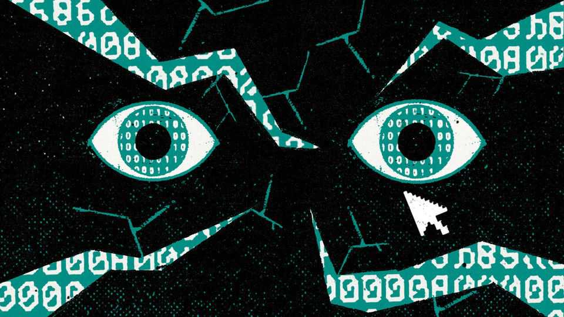

The world must act to stop a cyber-disaster
Governments should make sure defenders have better models than attackers do

Nov 5th 2026
It was meant to be “cyber-security awareness month”. Experts now call it “Black October”. In recent weeks the normal flow of computer hacks and bugs that engineers must constantly stem has become a torrent. The cause is artificial intelligence, which has turbocharged cyber malfeasance. Open-source AI models have empowered attackers to work with inhuman efficiency, competence and persistence. As a result, years’ worth of critical flaws have been exposed in days.
Those flaws range from shocking to ridiculous. Engineers have rushed to fix a flaw in PHP, a widely used programming language, that let attackers take over any computer using it. Freezers in supermarkets across Europe powered down on the instructions of cyber-criminals. And a crucial internet security certificate was revealed to have a private key of “4”, when it should have been a hundred digits long. Nobody knows what bugs might have been found and exploited in private.
These events have been sobering for the many commentators, including this newspaper, who hoped that the disruption to cyber-security from ai would be short-lived, and that the technology itself would help those who defend digital systems more than it would empower crooks. Those hopes are being dashed. Instead, the digital infrastructure on which modern life depends looks increasingly vulnerable to ai. Urgent action is needed to defend it.
Why are defenders struggling? The first reason is that many of them do not have the most advanced tools. In April Anthropic, a leading model-maker, launched “Project Glasswing”, an invitation-only club with access to the full cyber capabilities of its frontier models. It originally intended to broaden the membership widely. A similar programme from OpenAI was launched with a promise to democratise access to its tools.
However, access to powerful AI has become a geopolitical issue. Both of the model-makers now need sign-off from America’s federal government before admitting new members to their clubs, so expanding them has become a painful political process. In the meantime those outside the gates must defend themselves with the same open-source tools that are powering the attacks. Some are stuck in a no-man’s land: unable to access American tech, but also scared of using Chinese alternatives.
The second problem is that when AI is used benignly it creates a friendly-fire problem. The moment that a “patch” for a newly identified vulnerability is released, hackers’ AI models can examine it. This may reveal exactly what the weakness was and how to exploit it in systems that have not yet been fixed. If defenders are really unlucky—as they were with php—the patch may leak before it is released for defenders to use to fix their code. Attackers can then operate against still-defenceless systems.
A final issue is that attackers can exploit prosaic vulnerabilities faster and on a greater scale (see Business section). Cyber-security is not just about having strong systems available in theory, but avoiding laxity in practice. Unfortunately, AI has made human carelessness easier to exploit without making computer users any wiser. An internet-connected fridge running outdated software or using a default password has been a security hazard for decades. Only now, however, have attackers found it so easy to automate the search for and exploitation of weak points, running thousands of attacks in parallel.
Companies and governments must act decisively against these threats. Generating an imbalance in cyber-weaponry is crucial. With equal firepower, defenders rely on a narrow natural advantage: they must find and patch only single vulnerabilities—isolated problems which might in theory help create a breach. Attackers typically need to know of a whole chain of those vulnerabilities in order to breach a system.
Now that AI-powered attacks are proliferating, this advantage is too narrow. Defenders need a bigger armoury. America’s government should take a more permissive attitude to membership of cyber-defence programmes, or at least approve new joiners faster. It would also be better if attackers’ capabilities were pushed further behind the frontier. China’s government has recognised the folly of distributing potent cyber-weapons to all, and is requiring labs to limit the destructive potential of newly released systems.
Organisations that are not yet using AI constantly to find and close security holes have fallen behind the curve and must catch up. Some entities need more help. In America efforts like Texas’s “Project Watershed 250” are funnelling resources to providers of infrastructure to help with the basics. Those efforts should be expanded. In time, the software industry may be able to verify some code formally, thereby proving that it is unhackable, much as a mathematician proves a theorem.
Commerce, infrastructure and human relationships have come to rely on the assumption that the internet is secure. A sudden loss of cyber-security would therefore pose a grave threat to society. Cyber-security awareness has risen over the past month. Action must follow. ■